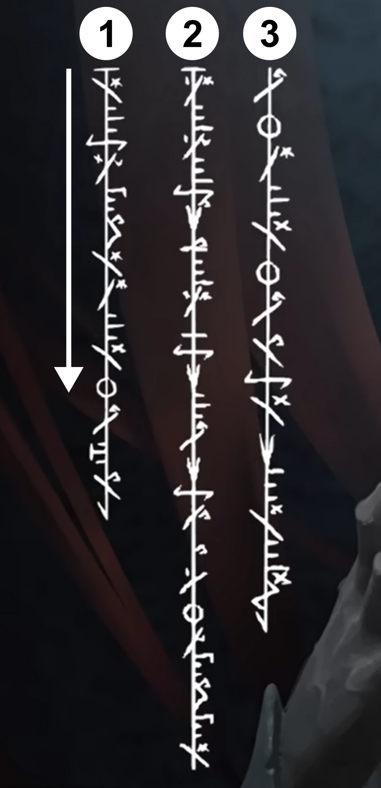
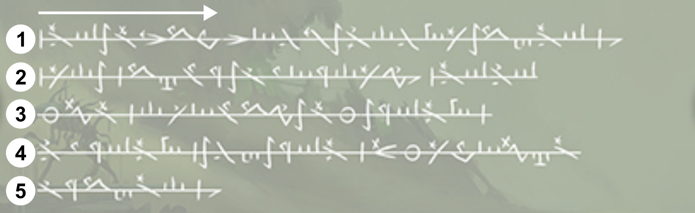
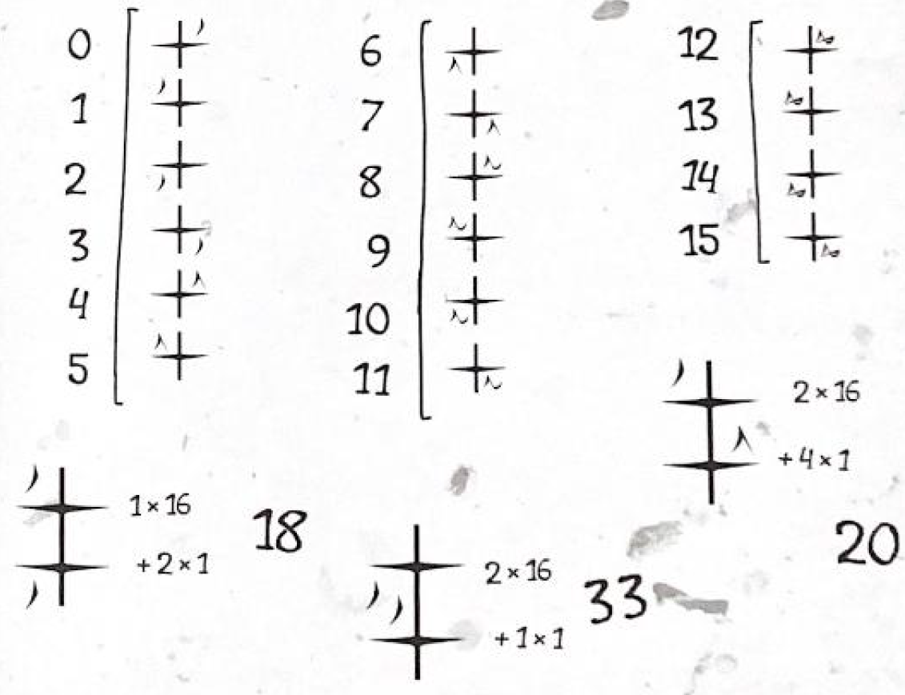

This page is a step-by-step tutorial for the Phyrexian language. It will cover the full extent of the community's current knowledge in the grammar of Phyrexian.
Phyrexian, like many languages in the real world, uses sequences of symbols to represent the pronounciation of words. These symbols are laid out along lines that connect them into words, and then the words into sentences.
These connecting lines can flow in two ways:
Vertically
symbols read from top to bottom, lines read from left to right
Horizontally
symbols read from left to right, lines read from top to bottom
To write your own text in phyrexian (in the computer), you will have to install one of the fonts you can find on the github repository for this website.
Phyrexian Regular is the official font used for cards. Two fonts (Phyrexian Regular and Basilica) are directly converted from official phyrexian text (symbols on table below). The others have been designed for ease of typing in common keyboards.
Alternatively, you can use our search page's virtual keyboard to type the text you want, then print the screen.
The symbols along Phyrexian script represent either letters for each sound (phonemes) in a word or punctuation that separates letters into words and sentences. All these symbols are displayed in the table below.
You may notice letters that are similar in sound share the same main glyph, and are differeniated by small symbols (diacritics) to the right and to the left of the main glyph. The left-hand diacritics indicate a "metallic consonant", that include the sound of clanking or slicing pieces of metal against each other, and cannot be pronounced by humans. The alternative is to replace "clanked" sounds with plosive consonants and "sliced" ones with aspirated consonants.
Unaltered Consonant
p
Clanked Consonant
π
Sliced Consonant
φ
It's important to note that, while there are official sources for how to pronounce each symbol, some sources can be contradictory. These contradictions stem from using comparisons as the ones below, where accents might pronounce some vowels and consonants differently. While we don't have a one-to-one reference to IPA (international phonetic alphabet), the closest official source to that is the table present at Wizard's article about the language. This tutorial will keep using word comparisons for accessibility.
| Punctuation | ||
|---|---|---|
| Symbol | Romanized Equivalent | Use |
| ^ | ^ | Start of normal sentences. Translations would end in a full stop. |
| ? | ? | Start of question sentences. Translations would end in an interrogation point. |
| ! | ! | Start of exclamatory sentences. Translations would end in an exclamation point. |
| " | " | Start of quoted sentences. It's unclear how to express the other sentence start symbols inside a quote. |
| . | . | Usual end of sentences. |
| : | : | End of sentence that serves the same purpose as a colon. Next sentence does not need a start symbol. |
| - | - | Word separator. Will not be present when at a line break |
| , | , | Word and phrase separator (similar to comma). Will not be present when at a line break |
| Vowels | ||
| Symbol | Romanized Equivalent | Use |
| i | i | As in pit |
| y | y | As in few or in French tu |
| e | e | As in they |
| a | a | As in car or father |
| ɒ | ɒ | As in saw or macaw |
| o | o | As in show |
| ø | ø | As in German schön or French peu |
| u | u | As in super |
| ə | ə | As in shut or up |
| Consonants | ||
| Symbol | Romanized Equivalent | Use |
| m | m | As in mango |
| n | n | As in nose |
| ŋ | ŋ | N with the back of the tongue, as in sing |
| ɴ | ɴ | N with the throat, as in lung |
| s | s | As in street |
| š | š | As in shovel |
| z | z | As in zebra |
| ž | ž | As the S in vision |
| ɬ | ɬ | L with the middle of the tongue |
| ɮ | ɮ | Try to say the S of vision with the tongue against the roof of the mouth |
| l | l | As in lock |
| r | r | Trilled R, as in Spanish words and the Scottish accent |
| č | č | As in check or chore |
| dž | dž | Like a dg/dz sound, as in jug or lodge |
| w | w | As in walk |
| j | j | As in you |
| ẅ | ẅ | Y wish the back of your tongue |
| ' | ' | Glottal stop as in uh-oh or if you try to say "a apple" |
| h | h | As in hat |
| p | p | As in pong |
| f | f | As in fire |
| π | π | Plosive P. Try to hold the P while accumulating air in the mouth before releasing |
| φ | φ | Aspirated P. Try to do an F with your lips |
| b | b | As in ball |
| v | v | As in video |
| t | t | As in time |
| θ | θ | As in thin |
| ť | ť | Plosive T. Try to hold the T while accumulating air in the mouth before releasing |
| ţ | ţ | Aspirated T. Try to do an H and a T at the same time |
| d | d | As in dance |
| ð | ð | As in the or this |
| k | k | As in karma |
| x | x | As in the Scottish pronounciation of loch |
| ǩ | ǩ | Plosive K. Try to hold the K while tightening the throat before releasing |
| ķ | ķ | Aspirated K. Try to do an H and a K at the same time |
| g | g | As in good |
| ɣ | ɣ | A G without touching your tongue. Like the Greek gamma |
| q | q | As the C in caught or country |
| χ | χ | Like the CH in the Scottish loch, but with your throat |
| ǧ | ǧ | Plosive G. Try to hold the G while tightening the throat before releasing |
| ǥ | ǥ | Aspirated G. Try to do an H and a G at the same time |
| ɢ | ɢ | Like the plosive G, but with your throat |
| ʁ | ʁ | Like the French R, made with the throat |
Phyrexian uses a hexadecimal system to count. That means they have 16 distinct symbols for numbers from 0 to 15, then combines these symbols in sequence to get higher numbers (for comparison, our arabic numerals are in base 10, having ten distinct symbols from 0 to 9 and then looping back).
While not present in the main fonts (these just use arabic numerals along the connecting line), we hypothesize this is how Phyrexian should properly represent numbers along their text.
The Basilica font, in turn, implements these numbers with the 0-9 and A-F portions of the "Mathematical Monospace" part of Unicode (the universal code table for most symbols from different languages). Use this website to type whichever numbers you like and paste in text with the Basilica font to get the numbers.
Here's a visual explanation from the Beadle & Grimm's guide:
In general, words in Phyrexian are short and formed of mostly consonants, with vowels and prefixes changing to adapt the meaning of a root word. Words roots begin and end with a consonant, generally in the format CVCC (C for consonant and V for vowel), but also CCVCC in some cases.
Here are some examples:
Death: θuqx - θuqx
Life: nsa'q - nsa'q
Blood: huqt - huqt
Native Phyrexian names are similar to their spelling in English, but often drop vowels in their spelling. It's unclear wether the vowels should be inferred or if we should assume that, in universe, the vowels were introduced into the English spelling to make them more "human readable".
When adapting names and foreign words to Phyrexian, we try to replicate the word's phonemes with the Phyrexian letters. The rule for consonants at the beginning and end is mantained, and glottal stops are used to enforce it.
Here are some examples:
Sheoldred: šøldrd - šøldrd
Jace: džes - džes
Vraska: vraskə' - vraskə'
Tamiyo: tam'oo' - tam'oo'
Ajani: 'ədžɒnii' - 'ədžɒnii'
Many Phyrexian words are built by joining a word root to a particle immediately before it. This is similar to English, where the suffix "X -er" means "a thing that does X" (worker, sleeper, walker).
Many of these are not entirely understood due to the lack of examples for them, so I will not try to create a table explaining each one. This will be explored in a later chapter and, for now, here are some brief examples of this concept in action (of cases we are very sure about):
Collective prefix: ke
Collective of land (θəɢð) = World: keθəɢð - keθəɢð
Collective of creature (φe'x) = Herd: keφe'x - keθəɢð
Opposition prefix: əx
Opposite of player (nɒqč) = Opponent: əxnɒqč - əxnɒqč
Opposite of pure (tunm) = Impure: əxtunm - əxtunm
Ability prefix: ɣwi
Ability to fly (tøšq) = Flying: ɣwitøšq - ɣwitøšq
Ability to "oversee" (pnrukm) = Vigilance: ɣwipnrukm - ɣwipnrukm
"One that-" prefix: naķm
One that whispers ('idžee't) = Whisperer: naķm'idžee't - naķm'idžee't
One that speaks (pihš) = Speaker: naķmpihš - naķmpihš
One that defiles (zept) = Defiler: naķmzept - naķmzept
Much like some real world languages, Phyrexian can concatenate multiple words when they add to the meaning of each other. The main reason for this to happen is with adjectives, which specify qualities for another word. If this concatenation was applied to English, we could write a "phyrexian beast" as "phyrexianbeast".
Here are some examples in Phyrexian:
Great + Evolution: šχa'θ + ɢiss - šχa'θɢiss
Perfect + Phyrexian + World: jnaķm + φyrx + keθəgð - jnaķmφyrxkeθəgð
Legendary + Colorless + Artifact + Token: ʁajg + əxsopšikt + qxuna'k + fa'ipeθ - ʁajgəxsopšiktqxuna'kfa'ipeθ
Green + Phyrexian + Beast + Creature + Token: ɮiww + φyrx + pnpe'k + φe'x + fa'ipθ - ɮiwwφyrxpnpe'kφe'xfa'ipθ
On top of having modifiers for each of the roots that can compose a word, Phyrexian can also have modifiers for the whole word, that come before or after the concatenated unit of roots. These normally carry meaning that doesn't modify the meaning of the roots, but specifies it within the phrase or within a larger context.
These are similar to prepositions in English, where you would say "I want this option", "It's in the fridge", "It's on the table", etc.
Once again, these are not completely understood and will be explored in a later chapter. Here are examples that we're more sure of:
Addition suffix: xə
Creatures (φee'x) and Artifacts (qxunaa'k): φee'xqxunaa'kxə - φee'xqxunaa'kxə
Alternative suffix: ðə
Creatures (φee'x) or Artifacts (qxunaa'k): φee'xqxunaa'kðə - φee'xqxunaa'kðə
Location (on) prefix: əšq
On a permanent ('astiww): əšq'astiww - əšq'astiww
One last method that Phyrexian uses to modify its words is through relational infixes. These are extra vowels that usually go before the last consonant of a word and can specify possession or who is doing the action in a verb.
Since understanding them requires us to understand verbs and sentence structure, they will be discussed in a later chapter.
For this chapter, we will analyse the following phrase:
Yawgmoth killed Urza
^'u-jɒ'gmo'θ-'ərza'-qabe'.
^'u-jɒ'gmo'θ-'ərza'-qabe'.
Phyrexian has a very different way of constructing sentences when compared to English. To construct its phrases English commonly uses the SVO structure:
In our example, "Yawgmoth" is the subject, "killed" is the verb, and "Urza" is the object.
In the case of Phyrexian, when all elements are present, generally the SOV structure is used ("Yawgmoth Urza killed"), with the verb always at the very end of the phrase:
^'u-jɒ'gmo'θ-'ərza'-qabe'.
While in English we carry information about when an action is performed (a phrase's tense) in verbs and surrounding words (walks / walked / will walk), Phyrexian conveys this through a word at the beginning of every phrase. Think of it as a declaration:
PAST: Yawgmoth Urza kill
^'u-jɒ'gmo'θ-'ərza'-qabe'.
The purpose of these words isn't just to convey when a phrase is happening: they also inform in which manner the phrase is happening. Every marker also has versions for its negative equivalent (Affirmative vs Negative) if it's being used as a question (Declarative vs Interrogative).
This becomes clearer by inspecting the table below:
| Present (non-past) | ||||||
|---|---|---|---|---|---|---|
| Declarative | Interrogative | |||||
| Aff. | Neg. | Example | Aff. | Neg. | Example | |
| Indicative | xe - xe | əx - əx | Yawgmoth kills Urza Yawgmoth does not kill Urza |
ɴe - ɴe | əɴ - əɴ | Does Yawgmoth kill Urza? Does Yawgmoth not kill Urza? |
| Generic | ve - ve | vəx - vəx | Yawgmoth normally kills Urza Yawgmoth normally doesn't kill Urza |
vɴe - vɴe | vəɴ - vəɴ | Does Yawgmoth normally kill Urza? Does Yawgmoth normally not kill Urza? |
| Optative (permission) | xwe - xwe | əxw - əxw | Yawgmoth may kill Urza Yawgmoth may not kill Urza |
we - we | əw - əw | May Yawgmoth kill Urza? May Yawgmoth not kill Urza? |
| Hypothetical | xba - xba | kpa - kpa | Yawgmoth might kill Urza Yawgmoth might not kill Urza |
'axəb - 'axəb | 'axp - 'axp | Yawgmoth might kill Urza? Yawgmoth might not kill Urza? |
| Conditional | ba - ba | bu - bu | If Yawgmoth kills Urza If Yawgmoth doesn't kill Urza |
'uuba - 'uuba | 'uubu - 'uubu | If Yawgmoth kills Urza ... ? If Yawgmoth doesn't kill Urza ... ? |
| Potential | ťe - ťe | əť - əť | Yawgmoth can kill Urza Yawgmoth can't kill Urza |
ŋe - ŋe | əŋ - əŋ | Can Yawgmoth kill Urza? Can't Yawgmoth kill Urza? |
| Jussive | ǩaπa - ǩaπa | əxπa - əxπa | Yawgmoth must kill Urza Yawgmoth must not kill Urza |
ŋaπa - ŋaπa | əŋkπa - əŋkπa | Yawgmoth must kill Urza? Yawgmoth must not kill Urza? |
| Imperative | lo - lo | əl - əl | Yawgmoth, kill Urza Yawgmoth, don't kill Urza |
ŋo - ŋo | ləŋ - ləŋ | Should Yawgmoth kill Urza? Should Yawgmoth not kill Urza? |
| Past | ||||||
| Declarative | Interrogative | |||||
| Aff. | Neg. | Example | Aff. | Neg. | Example | |